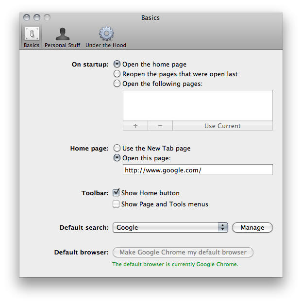
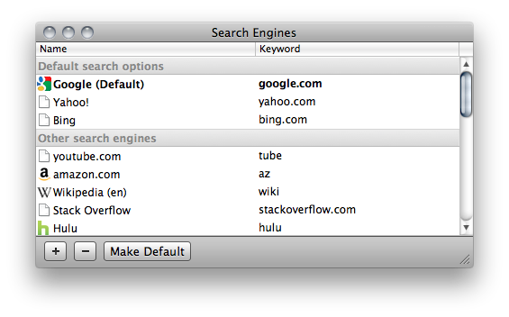
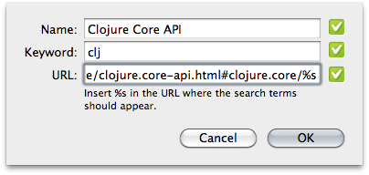
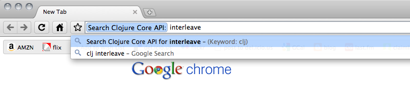

Do you need an easy way to search Clojure‘s API? Do you use Google's Chrome browser? If so, you're in luck; it's incredibly easy to add a custom engine to Chrome to search the API. Here's how.
Setting Up a Custom Search Engine
First, open your preferences and hit the “Manage” button down by “Default Search”.

That will bring up a Search Engines box. This is how Chrome knows to search, say, Google for whatever you type in the Address Bar (or OmniBox, as it's also known).

Hit the “+” button to set up a new search engine. The resulting
dialog asks you for a “Name”, a “Keyword”, and a “URL”. Name and
Keyword can be whatever you want. You should probably keep Keyword
short and pithy, however, as this is what you'll be typing in the
Address Bar to tell Chrome which Search Engine to use (I chose “clj”).
Finally, the URL should be a parameterized version of the site you
want to search. For example, when you search Google for “cheese”, the
URL you end up at is this:
http://www.google.com/search?q=cheese.
To parameterize this for Chrome, just remove the search term and
replace it with “%s” (without quotes). Thus, the Google search URL
would become http://www.google.com/search?q=%s. Take a look at the
other Search Engines you have for more examples.
The Clojure API isn't a search engine (it's just a big HTML page), but that doesn't mean we're out of luck. Documentation entries for each function are accessible through HTML anchors; we'll simply parameterize the anchors! Here is the parameterized URL you'll need to search the core Clojure API with Chrome:
http://richhickey.github.com/clojure/clojure.core-api.html#clojure.core/%s

When your new Search Engine is all set up, hit “OK”.
Using a Custom Search Engine
Now for the fun. Go to the Search Bar and type your Search Engine Keyword “clj”, a space, and the Clojure function you need to know about. Once you've hit the space after the keyword, Chrome will expand it to the name of your Search Engine, indicating that you're no longer using your default Search Engine. Hit Enter and you're taken directly to the API docs for your function.

Neat, eh?